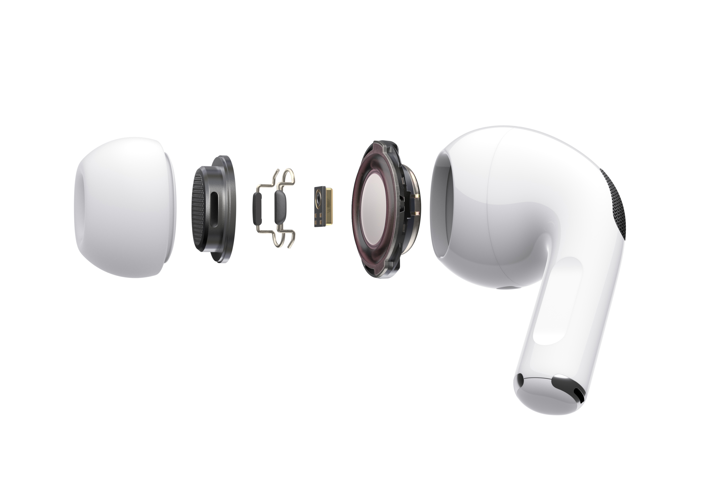
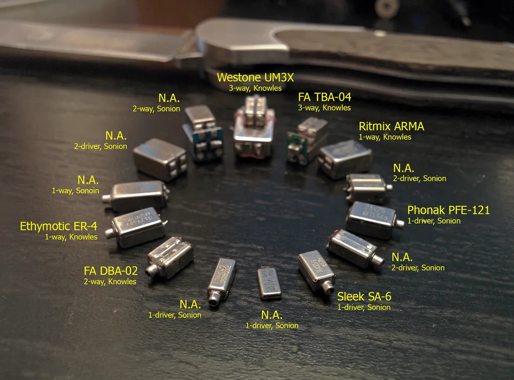
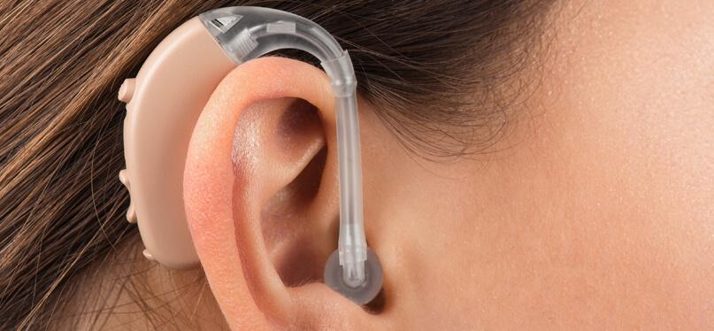
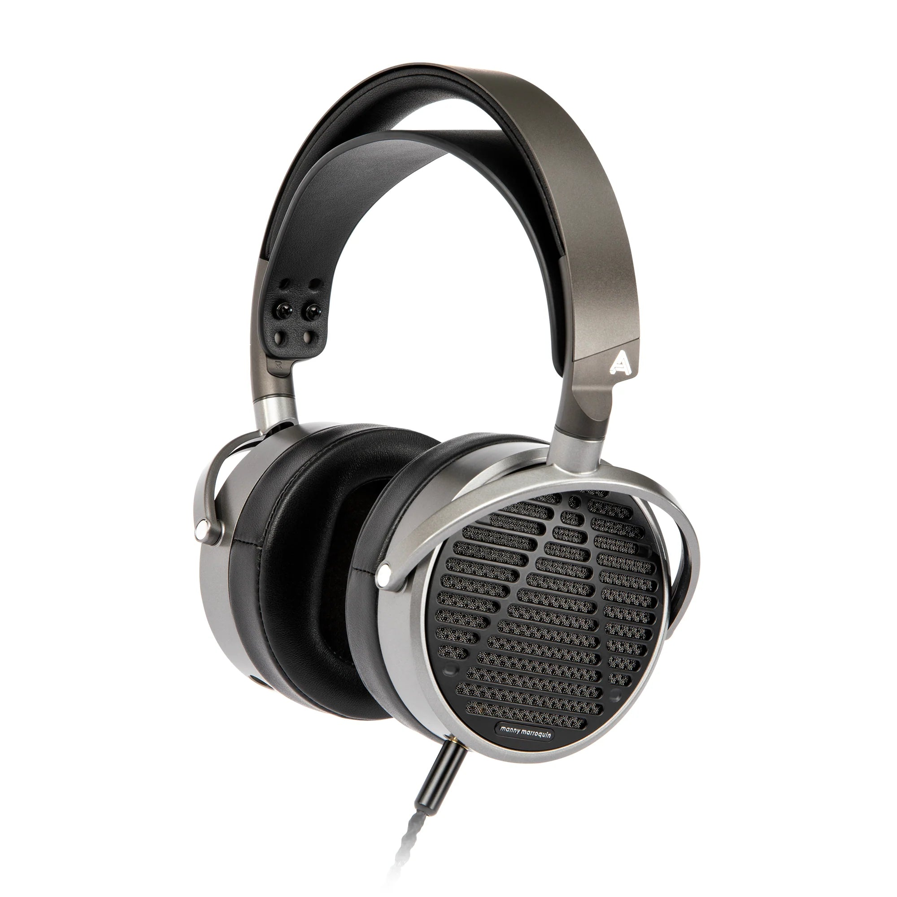
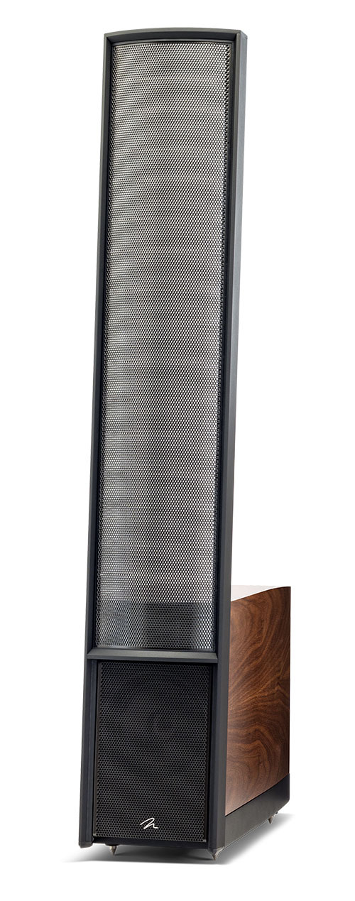
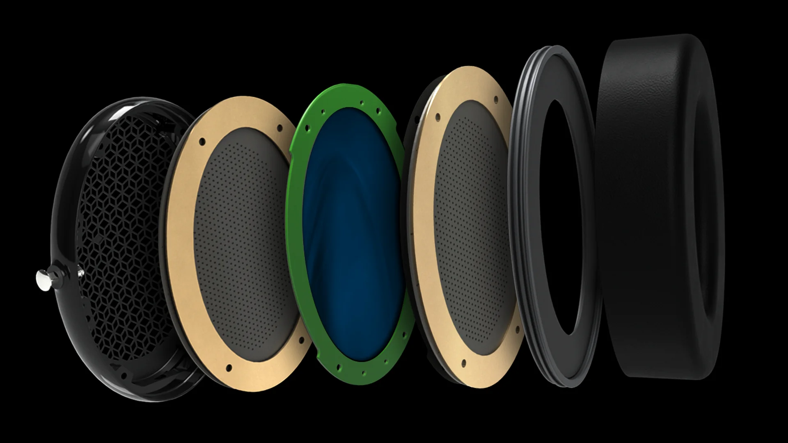

We all heard about speakers, but do you know that there are mainly four different type of them?
The more official term of speaker is Transducer, which means it convert electrical energy (music signal) into mechanical energy (sound
waves). They're found in headphones, earbuds, speakers, and many other
audio devices.
Sound itself is a pressure wave that travels through air (or other
media). When an audio transducer vibrates, it pushes and pulls air
molecules, creating these pressure waves that our ears interpret as
sound. While they all serve the same purpose - to create sound -
modern speakers mainly use 4 different mechanisms.
Dynamic Drivers
Dynamic drivers (also called moving-coil drivers) are the most common
type found in everyday headphones and speakers. They use a simple
electromagnetic principle: when electricity flows through a coil within
a magnetic field, the coil moves.
Cross-sectional view of a dynamic driver showing its internal components

Apple AirPods Pro components showing the dynamic driver implementation
How Dynamic Drivers Work:
The voice coil sits in a magnetic field created by a
permanent magnet.
When audio current passes through the coil, it creates a temporary
magnetic field that interacts with the permanent magnet.
This interaction causes the coil to move back and forth.
The coil is attached to a cone (diaphragm) that pushes air, creating
sound waves.
Pros: Simple design, good bass response,
cost-effective.
Cons: Can distort at high volumes, less detailed than
other technologies.
Balanced Armature Drivers
Balanced armature drivers are commonly found in in-ear monitors and
hearing aids. They use a tiny pivoting armature balanced between two
magnetic poles, connected to a diaphragm.

Various balanced armature drivers from different manufacturers showing different configurations (1-way to 3-way)

A hearing aid implementation using balanced armature driver technology
How Balanced Armature Drivers Work:
A small metal armature is wrapped with a coil and placed between two
magnetic poles.
When audio current flows through the coil, it magnetizes the armature.
This causes the armature to pivot toward one magnetic pole or the
other.
The armature is connected to a diaphragm, which creates sound waves as
it moves.
Pros: Compact size, excellent midrange and treble, low
power requirements.
Cons: Limited bass response, can sound less natural
than dynamic drivers.
Planar Magnetic Drivers
Planar magnetic drivers (also called orthodynamic drivers) use a flat
diaphragm with embedded conductors placed between magnetic arrays.
They're found in high-end headphones.
Explosion graph for a planar maganetic driver

A full picture of a planar maganetic headphone for studio use
How Planar Magnetic Drivers Work:
A thin, flat diaphragm has conductive traces or wires embedded within
it.
This diaphragm is suspended between arrays of magnets.
When audio current passes through the conductors, magnetic fields are
created.
These fields interact with the permanent magnets, causing the entire
diaphragm to move uniformly.
This movement creates sound waves.
Pros: Low distortion, excellent transient response,
even sound distribution, good for mixing engineers
Cons: Typically require more power, larger size, often
more expensive.
Electrostatic Drivers
Electrostatic drivers use an ultra-thin diaphragm suspended between two
charged plates (stators). They're found in high-end audiophile
headphones and speakers.

Electrostatic speakers are often very tall, with the large mambrance producing enough loudness

Electrostatic headphones are similar to planar ones except for even thinner mambrance
How Electrostatic Drivers Work:
An incredibly thin diaphragm (usually a few microns thick) is given a
fixed electrical charge.
This diaphragm is suspended between two perforated metal plates
(stators).
When audio signal is applied to the stators, it creates varying
electrical fields.
The charged diaphragm is attracted to one stator and repelled by the
other, causing it to move.
This movement creates sound waves that pass through the perforations
in the stators.